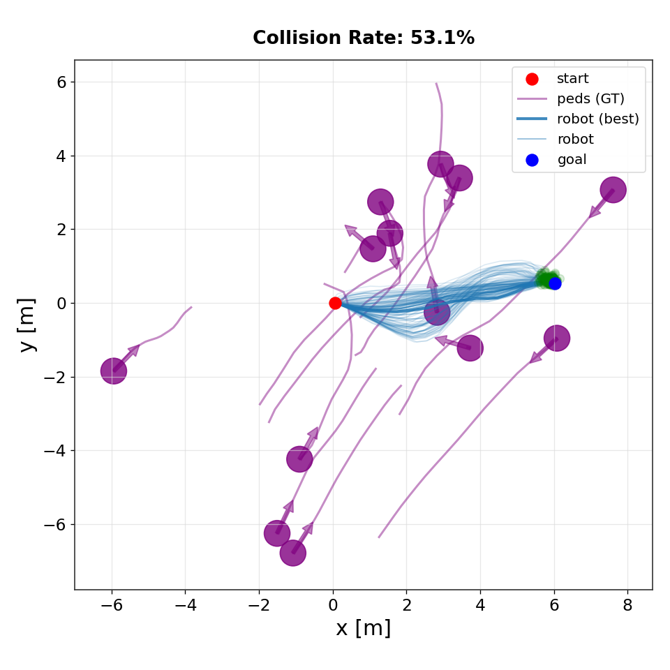
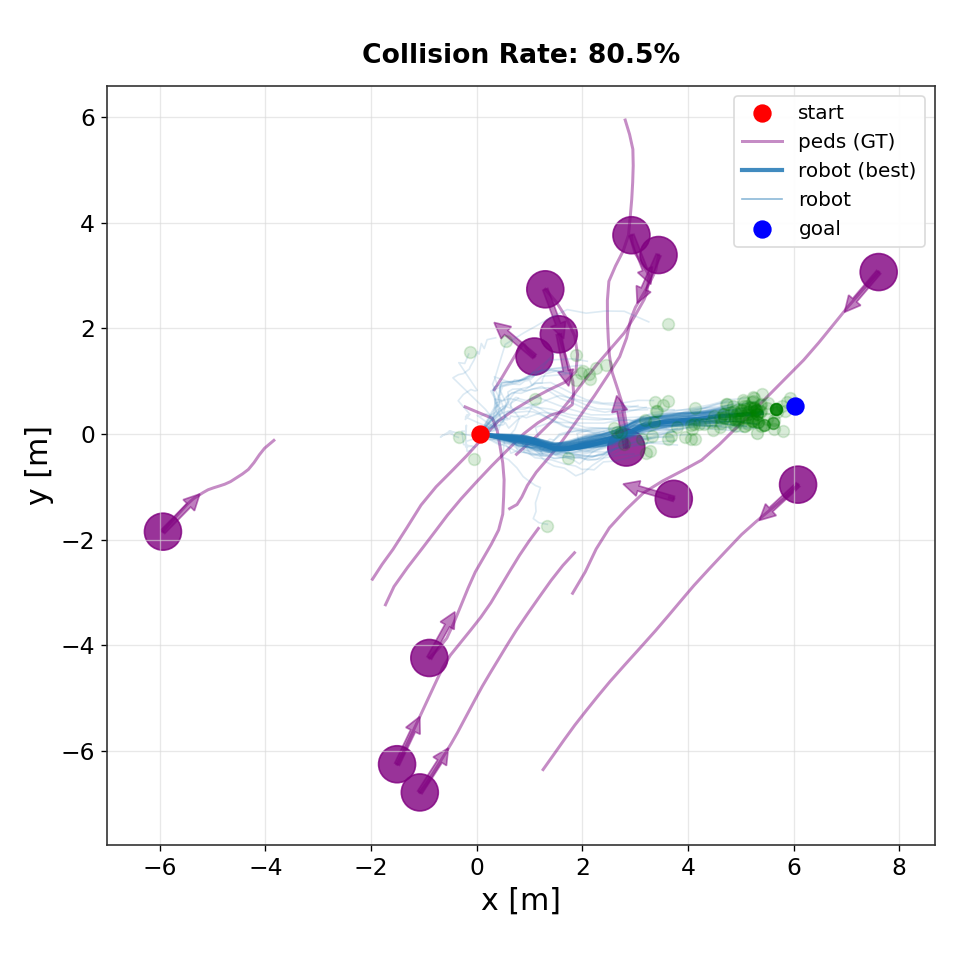
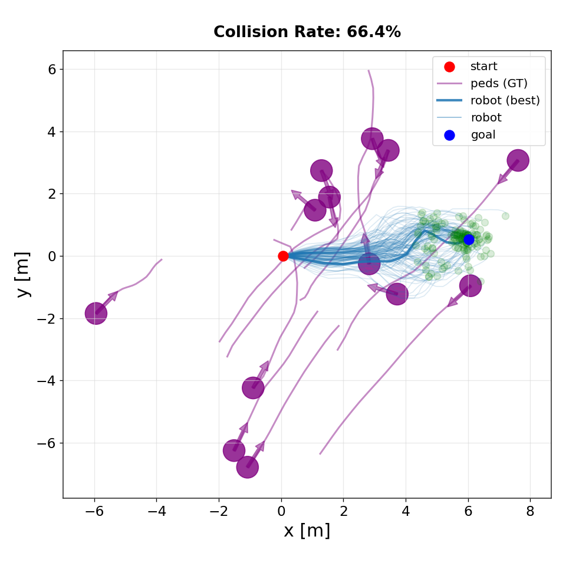

Abstract
Diffusion-based models have recently shown strong performance in trajectory planning, as they are capable of capturing diverse, multimodal distributions of complex behaviors.
A key limitation of these models is their slow inference speed, which results from the iterative denoising process. This makes them less suitable for real-time planning, where trajectories must be generated quickly and continuously adapted to a changing environment.
In this paper, we investigate Implicit Maximum Likelihood Estimation (IMLE) as an alternative generative modeling approach for planning. IMLE offers strong mode coverage while enabling inference that is two orders of magnitude faster, making it particularly well suited for real-time MPC tasks.
Our results demonstrate that IMLE achieves competitive performance on standard offline reinforcement learning benchmarks compared to the standard diffusion-based planner, while substantially improving planning speed in both open-loop and closed-loop settings.
We further validate IMLE in a closed-loop human navigation scenario, operating in real-time, demonstrating how it enables rapid and adaptive plan generation in dynamic environments.
What is IMLE?
We use Implicit Maximum Likelihood Estimation (IMLE) to learn a trajectory generator \( f_{\theta}(z, c) \) that maps latent noise \( z \sim \mathcal{N}(0, I) \) and planning context \( c \) (e.g., start/goal, observations, or scene state) to a trajectory rollout. IMLE is trained via nearest-neighbor matching: each dataset trajectory is encouraged to have at least one nearby generated sample.
For each trajectory \( \tau_i \), we draw a small set of latent samples \( Z_i = \{ z_{i,1}, \ldots, z_{i,M} \} \). The generator produces candidate trajectories \( f_{\theta}(z, c_i) \), and the training objective selects the generated trajectory closest to the dataset trajectory:
$$ \mathcal{L}_{\text{IMLE}}(\theta) = \mathbb{E}_{\{Z_i\}} \left[ \sum_i \min_{z \in Z_i} \| f_{\theta}(z, c_i) - \tau_i \|_2^2 \right] $$
This objective enables IMLE to learn a multimodal trajectory generator aligned with the dataset distribution.
Reward-Weighted IMLE for Model Predictive Control
While standard IMLE learns to match the empirical trajectory distribution, it treats all trajectories equally regardless of their task performance. For planning, however, we want the generator to prioritize trajectories that achieve higher reward while respecting safety and task constraints. To accomplish this, we introduce reward-weighted IMLE, which modifies the training objective to bias the learned distribution toward high-value trajectories.
$$ \mathcal{L}_{\text{RW-IMLE}}(\theta) = \mathbb{E}_{\{Z_i\}} \left[ \sum_i w(\tau_i) \min_{z \in Z_i} \| f_{\theta}(z, c_i) - \tau_i \|_2^2 \right] $$
where \( \tau_i \) is a trajectory from the dataset and \( w(\tau_i) \) is a weight derived from its task reward or cost. Following control-as-inference principles, we compute weights using Boltzmann weighting:
$$ w(\tau_i) = \exp\!\left(\frac{R(\tau_i)}{\beta}\right) $$
where \( R(\tau_i) \) is the trajectory return and \( \beta > 0 \) is a temperature parameter controlling how strongly the generator prioritizes high-value trajectories. This formulation biases the learned trajectory distribution toward higher-value behaviors, encouraging closer matching of such trajectories while preserving multimodal coverage of feasible trajectories.
During inference, IMLE enables efficient generation of many candidate trajectories in parallel:
- Sample latent noise \( z_1, \dots, z_K \)
- Generate candidate trajectories \( \tau^{(k)} = f_{\theta}(z_k, c) \)
- Evaluate trajectories using the task reward and safety constraints
- Execute the first action of the highest-value trajectory
Because trajectory generation requires only a single forward pass, IMLE enables fast replanning while maintaining multimodal trajectory diversity, making it well suited as a generative prior for real-time model predictive control in dynamic environments.
Multimodal Planning Behavior
A key advantage of IMLE for planning is its ability to represent multiple valid futures from the same context. Because IMLE matches each dataset trajectory with its nearest generated sample, the generator is encouraged to cover distinct behaviors present in the data rather than averaging across them.
Reward weighting biases this multimodal distribution toward higher-value trajectories while still preserving diverse feasible strategies. As a result, the planner can represent multiple high-reward solutions (e.g., different homotopy classes or avoidance maneuvers) for the same situation.
During planning, sampling different latent variables produces a set of candidate trajectories. Model Predictive Control evaluates these candidates and selects an action, enabling adaptive behavior while retaining multiple viable alternatives.

IMLE

CFM

CoBL Diffusion
Qualitative comparison of trajectory distributions produced by different planners. IMLE generates diverse but goal-directed rollouts that concentrate near feasible high-value trajectories. In contrast, flow-matching and diffusion-based planners exhibit greater dispersion and instability near the goal, leading to higher collision rates in dynamic environments.
Offline RL
We evaluate IMLE for offline reinforcement learning across locomotion and long-horizon planning tasks. Experiments are conducted on the MuJoCo locomotion suite and Maze2D benchmarks, comparing against diffusion-based planners. Results show that IMLE achieves competitive performance while enabling significantly faster trajectory sampling.
MuJoCo Locomotion
Swipe horizontally to view full table
| Dataset | Environment | Diffuser | IMLE+Exp RW |
|---|---|---|---|
| Medium-Expert | HalfCheetah | 88.9 | 91.9 ± 0.09 |
| Hopper | 103.3 | 104.2 ± 3.81 | |
| Walker2d | 106.9 | 107.9 ± 0.40 | |
| Medium | HalfCheetah | 42.8 | 43.1 ± 0.29 |
| Hopper | 74.3 | 85.0 ± 4.02 | |
| Walker2d | 79.6 | 78.3 ± 2.75 | |
| Medium-Replay | HalfCheetah | 37.7 | 39.5 ± 0.59 |
| Hopper | 93.6 | 85.0 ± 4.02 | |
| Walker2d | 70.6 | 69.7 ± 3.84 | |
| Average | 77.5 | 78.47 | |
| Sampling Frequency on CPU (Hz) | 1.33 | 32.87 | |
| Sampling Frequency on GPU (Hz) | 2.25 | 53.52 | |
Performance comparison across MuJoCo locomotion datasets (Batch Size 64).
Maze2D
Swipe horizontally to view full table
| Dataset | Environment | Diffuser | IMLE |
|---|---|---|---|
| Single Task | U-Maze | 113.9 | 124.8 ± 0.65 |
| Medium | 121.5 | 117.3 ± 3.53 | |
| Large | 123.0 | 129.2 ± 4.89 | |
| Average | 119.5 | 123.7 | |
| Multi Task | U-Maze | 128.9 | 132.3 ± 0.97 |
| Medium | 127.2 | 127.8 ± 2.60 | |
| Large | 132.1 | 137.1 ± 4.41 | |
| Average | 129.4 | 132.4 | |
| Sampling Frequency on CPU (Hz) | 0.96 | 114.63 | |
| Sampling Frequency on GPU (Hz) | 1.37 | 101.28 | |
Performance comparison across Maze2D datasets (Batch Size 1).
Real-World Robot Deployment
The planner is trained using real-world human pedestrian data (ETH and UCY) to generate socially compliant navigation behaviors. We deploy the system on the Robotnik RB-1 mobile robot navigating among pedestrians in a shared indoor environment, where trajectories are generated and evaluated in real time.
Navigation Under Platform Differences
We further evaluate the same planner on a TurtleBot2 platform, which has more limited acceleration and turning capability than the Robotnik RB-1 used above. Because the planner is trained on human trajectory data, the generated plans can be more dynamic than the TurtleBot2 can accurately execute, introducing a more signifacant mismatch between the planned trajectories and the robot’s true dynamics during execution.
In most scenarios the robot navigates safely while replanning in real time. In the most challenging four-pedestrian interaction, however, rapid changes in the planned trajectories can exceed the TurtleBot2’s tracking capability, occasionally bringing the robot very close to nearby pedestrians.
Real-world navigation
Planner rollouts
BibTeX
@article{lee2026implicit,
title={Implicit Maximum Likelihood Estimation for Real-time Generative Model Predictive Control},
author={Lee, Grayson and Bui, Minh and Zhou, Shuzi and Li, Yankai and Chen, Mo and Li, Ke},
journal={IEEE International Conference on Robotics and Automation (ICRA)},
year={2026},
}